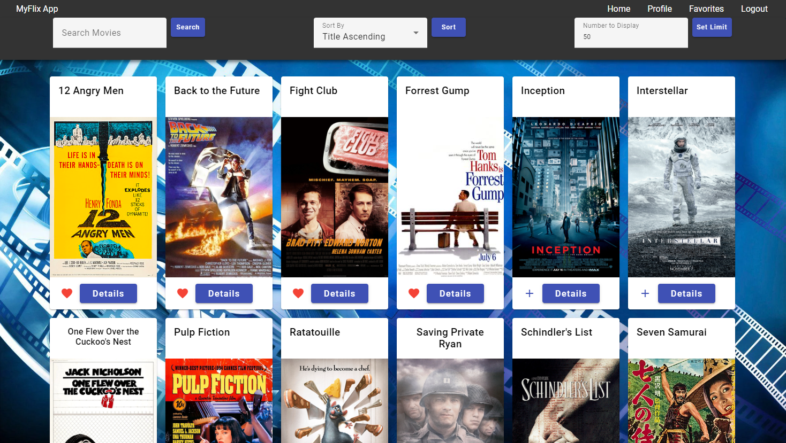
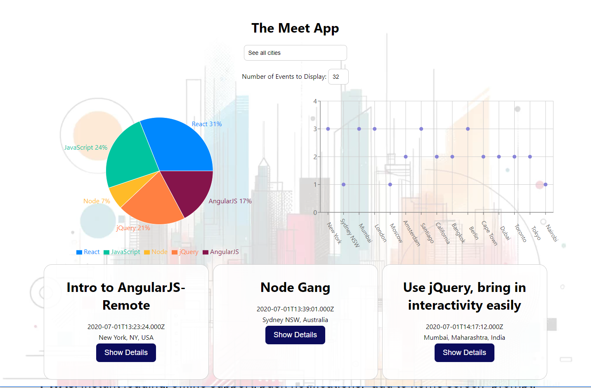
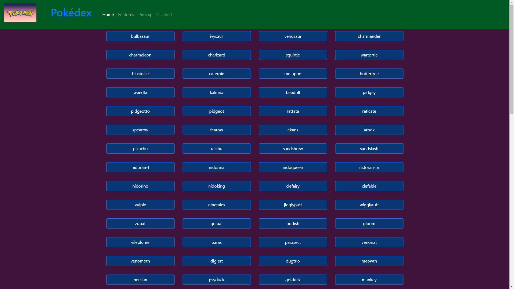

MyFlix Angular Client
MEAN/Angular/Material-Design
Movie fans want an encyclopedic resource they can access easily to learn about movies.
MyFlix-Angular is a single-page, responsive movie app built with Angular, with routing and several
interface views. It allows users to register, log in, and view information about different movies,
directors, and genres. They can also add and remove movies from their list of favorites!
MyFlix React Client

MERN/React/Bootstrap
The benefits of React over Angular include a smaller learning curve, and a more
flexible and efficient way to build user interfaces.
Either way it's built, movie fans can enjoy a database with similar functionality built with either
Angular or React.
Designed to have the same functionality as the Angular MyFlix, this version was created using the very
popular React library.
MyFlix API
MongoDB/REST/Passport/JWT
A modern database needs to be able to quickly and efficiently store and retrieve data. The database must
be able to handle a large number of users and a large amount of data, and it must be easily maintainable.
The MyFlix API is a NoSQL Database with RESTful API interface, built with Node.js and Express.
By leveraging the power of MongoDB and Mongoose, this type
of API meets the criteria for speed, efficiency, amount of data, and maintainability.
Meet App

PWA/CI-CD/AWS/Google-OAuth and API
The intersection between the physical and digital worlds is a powerful place. After all, it's sort of
what Web Dev is all about.
The intersection between mobile apps and desktop apps is the Progressive Web App (PWA), leveraging the
best of both worlds: the speed and ease of use of a mobile app, and the power and flexibility of a
desktop app.
The MeetApp is a Progressive Web App that allows users to search for a city and view a list of events
happening there.
Built with React using a test-driven development (TDD) technique.
The application uses the Google Calendar API to fetch upcoming events.
ChatApp

React-Native/Expo/Firebase/Firestore
Mobile apps are undeniably a huge part of Web Development today.
React Native makes it possible to build robust, feature-filled mobile apps with good old JavaScript.
Expo provides a suite of tools to make the process even easier.
The ChatApp demonstrates some of the capability in an application that was built over the course of only
a few days. It demonstrates a basic CHAT interface, and options to share images and their location. This project
demonstrates some of the vast possibilites which exist when you have access to the mobile device
suite of sensors and camera.
ChatApp features Asynchronous offline storage on the client side, and a real-time
Firebase/Firestore database on the server side. The app is built using React Native, Expo, and Google
Firestore.
Pokédex

HTML/CSS/JavaScript
Sometimes the simplest solution is still the best.
Pokédex demonstrates this, providing a
similar encyclopedic information about Pokémon as the more complex MyFlix apps. Although less robust in
terms of user interaction and capability, it is less dependent on external libraries and frameworks, and
is a good example of a simple, clean, and efficient application. It is built using HTML, CSS, and
JavaScript, and draws data from the Pokémon API.